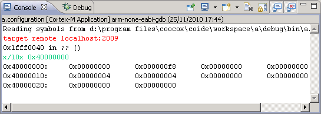

Console View
This view shows the output of the execution of your program and enables you to enter input for the program.

The console shows three different kinds of text, each is in a different color, default as follows:
- Black: Standard output
- Red: Standard error
- Green: Standard input
You can choose the different colors for these kinds of text in the preferences pages (Window > Preferences > Debug > Console).
Console View Context Menu:
When you right-click in the Console view (or when you press Shift+F10 when the focus is on the Console view), you could see the following options:
Edit options: Cut, Copy, Paste, Select All
These options perform the standard edit operations. Which options are available depends on where the focus is in the Console view. For example, you cannot paste text into the program output, but you can paste text to the bottom of the file.
Find/Replace
Opens a Find/Replace dialog that operates only on the text in the Console view.
Console View Toolbar:
| Icon |
Command |
Description |
 |
Pin Console |
Forces the Console view to remain on top of other views in the window area. |
|
Display Selected Console |
If multiple consoles are open, you can select the one to display from a list. |
|
Open Console |
Open new console view. |
|
Clear Console |
Clears the console. |
|
Scroll Lock |
Toggles the Scroll Lock. |
|
Show Console When Standard Out Changes |
Show console when standard out changes. |
|
Show Console When Standard Error Changes |
Show console when standard error changes. |
|